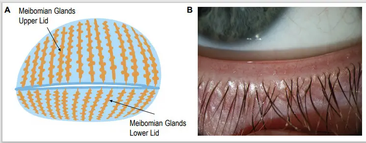
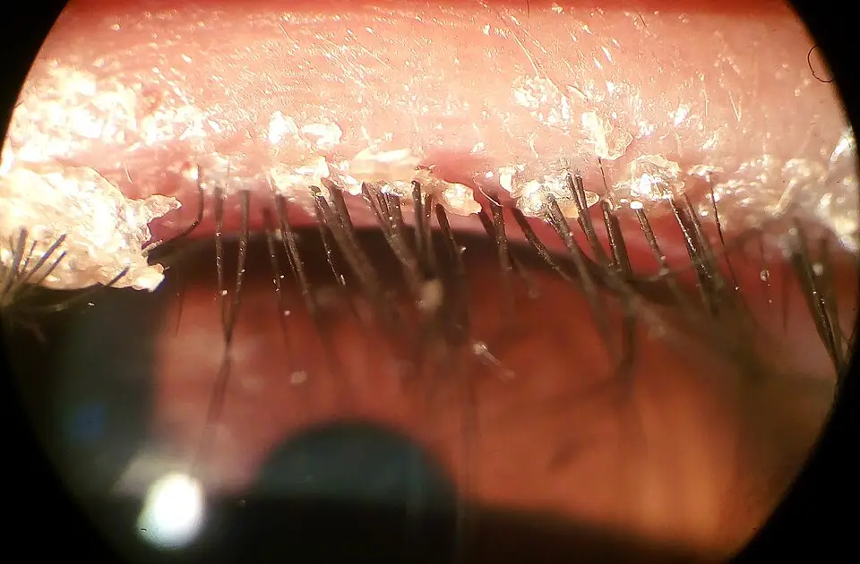

DX.2 — Blépharite
La blépharite ne menace ni la vie ni, en règle, la vue ; elle gêne longtemps, récidive souvent et se soigne surtout à la maisonS1S4S5. Elle entre dans le diagnostic différentiel des clignements excessifs, car l’irritation du bord libre déclenche des clignements réflexesS1S12. Le médecin la retient seulement après avoir écarté une kératite, un corps étranger et une tumeur palpébraleS1S4.
1. Définition
La blépharite est une inflammation chronique du bord libre des paupièresS1S2S4. La forme antérieure touche la peau, les cils et leurs follicules ; la forme postérieure touche le bord postérieur et s’associe à un dysfonctionnement des glandes de MeibomiusS1S4. Les deux formes coexistent souvent chez le même patientS4.
2. Épidémiologie (Suisse, puis Europe)
Les HUG décrivent la blépharite comme une affection ophtalmologique courante, au sein de l’œil rouge qui motive 2 à 3 % des consultations de premier recoursS1. En Espagne, une étude de population a mesuré un dysfonctionnement meibomien sans symptôme chez 21,9 % des adultes de 40 ans et plus, et avec symptômes chez 8,6 %S7. Les personnes exposées, l’évolution et le rang dans ce lot complètent ces chiffres.
Qui fait une blépharite ?
La revue Cochrane de 2012 rappelle que la blépharite touche les enfants comme les adultes, dans tous les groupes ethniquesS5. Dans l’étude espagnole, la fréquence du dysfonctionnement meibomien augmente avec l’âge, et la forme asymptomatique prédomine chez l’hommeS7.
La rosacée multiplie par 3,50 le risque de dysfonctionnement meibomien symptomatique dans cette même cohorte espagnoleS7. Le dysfonctionnement asymptomatique s’associe au diabète et aux maladies cardiovasculaires, et la forme symptomatique à la polyarthrite rhumatoïde, avec un rapport de cotes de 16,50S7. Dans une enquête allemande, 51,4 % des 777 patients atteints de rosacée signalent des symptômes oculairesS8.
Parmi ces patients symptomatiques, 77,4 % rapportent un orgelet ou un chalazion, ce qui relie rosacée, glandes palpébrales et nodules récidivantsS8. Une revue de 2026 cite une étude européenne qui retrouve des signes de blépharite à Demodex chez 54 % des patients de consultations ophtalmologiquesS11.
Comment la maladie évolue-t-elle ?
La blépharite chronique évolue par poussées ; aucun traitement évalué ne la guérit définitivement, et l’entretien reste souvent nécessaire au long coursS4S5. Les complications restent rares, mais la kératopathie superficielle, la néovascularisation et l’ulcération cornéennes peuvent laisser une baisse visuelle définitiveS5.
La revue allemande de 2022 ajoute la sécheresse oculaire et les malpositions palpébrales aux complications principalesS9. Les patients résistent souvent au traitement, ce qui impose d’expliquer d’emblée le caractère chronique de l’affectionS9.
Pourquoi la blépharite occupe-t-elle le deuxième rang ?
La liste gelée du lot classe les diagnostics par fréquence européenne, et la blépharite suit la sécheresse oculaire, qui partage son mécanisme évaporatif. Elle ne porte aucun rang d’urgence, car ses formes graves passent par la cornée, déjà couverte par la kératite aiguë.
3. Physiopathologie
La base anatomo-fonctionnelle explique chaque signe : la paupière porte en avant les cils et leurs follicules, en arrière les orifices des glandes de MeibomiusS3S4. Ces glandes sécrètent les lipides qui retardent l’évaporation des larmes ; leur obstruction déstabilise donc le film lacrymal et produit une sécheresse évaporativeS3S4S10.
La forme antérieure résulte surtout d’une colonisation staphylococcique ou d’une dermatite séborrhéique ; la forme postérieure résulte d’une obstruction et d’une hypersécrétion des glandesS1S2. Les acariens Demodex, le biofilm et la rosacée entretiennent l’inflammation, qui constitue la voie finale communeS9S10S11S13. La cascade des signes relie ensuite chaque lésion au symptôme qu’elle produit.
Base à connaître : bord libre, glandes et clignement
Le tarse est un cartilage très fin qui donne sa forme à chaque paupière ; des muscles l’élèvent et l’abaissent à chaque clignementS3. En se fermant, la paupière étale les larmes sur la cornée, qu’elle nettoie et garde humide et transparenteS3.
Les glandes de Meibomius occupent le tarse des deux paupières. Le schéma frontal montre les tarses (A), et la photographie montre le bord libre inférieur légèrement éversé (B)

Lisez d'abord seul ce cliché (les glandes de meibomius occupent le tarse des deux paupières) : cherchez vous-même le signe.
La copie annotée (les glandes de meibomius occupent le tarse des deux paupières) porte les repères décrits ci-dessous.
- Les glandes de la paupière supérieure forment des tubes verticaux parallèles, logés dans toute la hauteur du tarse.
- Les glandes de la paupière inférieure paraissent plus courtes sur ce schéma, car elles suivent la hauteur du tarse inférieur.
- Les orifices glandulaires s’alignent en arrière des cils, sur la lèvre postérieure du bord libre.
- Le médecin distingue la base des cils, siège de la forme antérieure, de la ligne des orifices, siège de la forme postérieure.
Ce que l'image décide. Le médecin examine séparément la base des cils puis la ligne des orifices, car chaque zone oriente vers des soins différents.

Les glandes de Meibomius, logées dans le tarse, produisent une couche lipidique fine qui empêche normalement les larmes de s’évaporer trop viteS3S4. La forme postérieure siège sur la lèvre interne du bord libre, juste en arrière des cils, là où débouchent ces glandesS4.
Chaque follicule ciliaire s’accompagne de petites glandes, dont celles de Zeiss et de Moll, qui expliquent l’orgelet quand le follicule s’infecteS1S2. Le clignement associe une brève contraction de l’orbiculaire de l’œil et une inhibition transitoire du releveur de la paupière supérieureS12.
Le clignement réflexe emprunte une voie afférente trigéminale et une voie efférente faciale, que l’électrophysiologie distingue en cas de lésionS12. Une surface oculaire irritée stimule donc la branche afférente et multiplie les clignements, sans qu’existe une dystonieS1S12.
Que font les acariens Demodex ?
Deux espèces colonisent la paupière : Demodex folliculorum et Demodex brevisS13. Elles vivent dans les follicules ciliaires et les glandes sébacées, où elles entretiennent une inflammation chronique et progressive du bord libreS11.
Leur présence peut dévier ou faire tomber des cils, rougir le bord libre, aggraver le dysfonctionnement meibomien et provoquer une blépharokératiteS11. Les collerettes, manchons de débris à la base des cils, constituent le signe pathognomonique de cette formeS11.
Du mécanisme au signe
| Lésion | Mécanisme | Signe ou symptôme |
|---|---|---|
| Colonisation du bord antérieurS1 | Le staphylocoque ou la séborrhée irrite les follicules ciliaires. | Croûtes, rougeur du bord libre, démangeaisons. |
| Obstruction meibomienneS1S4 | Le film lipidique manque et les larmes s’évaporent plus vite. | Brûlure, sensation de sable, vision floue fluctuante. |
| Inflammation de la surfaceS1 | La conjonctive réagit au contact du bord libre inflammatoire. | Injection conjonctivale, blépharoconjonctivite. |
| Atteinte cornéenneS1S5 | L’inflammation du bord libre atteint l’épithélium cornéen. | Infiltrats, photophobie, baisse visuelle. |
| Irritation trigéminaleS12 | L’afférence sensitive excite l’arc réflexe du clignement. | Clignements répétés, fermeture réflexe. |
La lecture du tableau montre que la photophobie et la baisse visuelle signent une atteinte cornéenne, et non une simple poussée du bord libreS1S2.
4. Démarche diagnostique
Le médecin cherche d’abord ce qui menace l’œil : une kératite aiguë (🚩 E1), un corps étranger ou une abrasion cornéenne (🚩 E2), puis une cellulite préseptaleS1S2. Il élimine ensuite une tumeur palpébrale qui imite une blépharite unilatérale, avant de retenir la blépharite et de préciser sa formeS1S4.
Il recherche enfin une sécheresse oculaire associée et une rosacée, car leur traitement conditionne le succès de l’hygiène palpébraleS1S7S8. Le raisonnement pas à pas évite l’erreur la plus fréquente : prendre un clignement réflexe pour une dystonie, ou l’inverse.
Clignements excessifs : blépharite ou dystonie ?
Le mécanisme oriente d’abord : une irritation du bord libre stimule l’afférence trigéminale, tandis qu’une dystonie naît d’une commande motrice anormale sans stimulus de surfaceS12. Le signe départage ensuite : la blépharite montre des croûtes, des orifices bouchés ou des collerettes, que le blépharospasme essentiel ne montre pasS1S11.
L’examen confirme : la fluorescéine recherche une atteinte cornéenne, qui explique à elle seule un clignement douloureux avec photophobieS1S2. La décision suit : on traite le bord libre, puis on réévalue le clignement ; sa persistance sur un bord libre assaini fait reconsidérer une cause neurologique.
L’erreur classique consiste à renouveler les pommades antibiotiques chez un patient qui ne pratique pas l’hygiène quotidienne, alors que les preuves les plus solides concernent cette hygièneS5. L’exemple suivant l’illustre : un patient traité 10 jours par pommade, sans soins de paupières, rechute à l’arrêt et reçoit une deuxième cure inutileS1S5.
Le médecin évite cette erreur en démontrant le geste au cabinet, en remettant la brochure des HUG et en fixant une réévaluation à distanceS3. Il évite l’erreur inverse en n’attribuant jamais à la blépharite une baisse visuelle ou une douleur intenseS1.
5. Anamnèse ciblée et drapeaux rouges
Le patient décrit une gêne ou une douleur, des démangeaisons, une sensation de corps étranger, un larmoiement, une photophobie ou une vision floueS1S2. Chaque symptôme se caractérise : la blépharite gêne surtout le matin, tandis qu’une sécheresse associée aggrave les symptômes au fil de la journéeS1.
Le médecin cherche ensuite les terrains et facteurs aggravants, puis les drapeaux rouges qui imposent un avis ophtalmologique le jour mêmeS1.
Caractériser chaque symptôme
| Symptôme | Caractère typique de la blépharite | Ce qui doit inquiéter, et pourquoi |
|---|---|---|
| Brûlure, irritationS1S2 | Elle est bilatérale, modérée et prédomine au réveil. | Une douleur intense et unilatérale évoque une kératite ou un glaucome aigu. |
| DémangeaisonsS1 | Elles touchent le bord libre et accompagnent les croûtes. | Un prurit avec eczéma et œdème oriente vers une dermatite de contact. |
| Sensation de corps étrangerS1 | Elle accompagne l’irritation diffuse des deux bords libres. | Une sensation brutale après un travail exposé évoque un corps étranger cornéen. |
| LarmoiementS1S2 | Il reste modéré et réflexe, sans sécrétion purulente. | Une sécrétion purulente abondante oriente vers une conjonctivite bactérienne. |
| PhotophobieS1 | Elle reste légère et passagère. | Une photophobie franche signe une atteinte cornéenne ou une uvéite. |
| Vision floueS1S2 | Elle reste fluctuante, comme le film lacrymal instable qui la provoque. | Une baisse persistante impose un avis ophtalmologique urgent. |
Le caractère bilatéral, chronique et fluctuant de ces symptômes plaide pour la blépharite, car la maladie touche les deux bords libres de façon diffuseS1S4.
Questions sur le terrain
- Le médecin demande une rosacée, une dermatite séborrhéique ou des orgelets et chalazions récidivants, qui accompagnent souvent la forme postérieureS1S7S8.
- Il demande le port de lentilles, qui augmente le risque infectieux et accélère l’évolution d’une kératiteS1.
- Il recense le tabac, l’air sec, la climatisation, le travail prolongé sur écran et les cosmétiques anciens, qui aggravent l’irritationS3.
- Il fait préciser les soins déjà tentés, leur technique et leur régularité, car une hygiène irrégulière explique la plupart des échecsS3S5.
- Il recherche une immunosuppression, un œil unique ou une maladie oculaire connue, qui abaissent le seuil d’orientation vers l’ophtalmologueS1.
Drapeaux rouges devant une paupière rouge
| Drapeau rouge | Ce qu’il fait craindre | Conduite |
|---|---|---|
| Baisse visuelle, photophobie, douleur intenseS1 | Kératite, uvéite ou glaucome aigu | Avis ophtalmologique en urgence le jour même. |
| Porteur de lentilles de contactS1 | Kératite infectieuse d’évolution rapide | Retrait des lentilles, conservation dans l’étui, avis urgent. |
| Paupière tuméfiée, rouge et chaudeS1 | Cellulite préseptale ou orbitaire | Évaluation urgente, recherche d’exophtalmie et de diplopie. |
| Lésion unilatérale persistante, perte localisée de cilsS1S4 | Carcinome palpébral, dont le carcinome sébacé | Avis ophtalmologique rapide et biopsie. |
| Absence de réponse après 48 heures de traitementS1 | Diagnostic erroné ou complication | Réévaluation et avis spécialisé. |
| Immunosuppression, œil unique, maladie oculaire connueS1 | Complication grave plus probable | Seuil d’orientation abaissé. |
Ces signes viennent du tableau des drapeaux rouges des HUG, qui les rattache à un examen spécialisé en urgenceS1.
6. Examen physique ciblé, région par région
L’examen suit l’ordre du geste au cabinet : il mesure d’abord l’acuité visuelle, puis inspecte la peau du visage, le bord libre antérieur et le bord libre postérieurS1S2. Il termine par la conjonctive après éversion, la cornée à la fluorescéine et la palpation des nodulesS1S2.
L’examen sans lampe à fente reste limité ; le médecin de premier recours compare toujours les deux yeux et note ce qu’il ne peut pas voirS1. La valeur des signes oriente ensuite l’interprétation.
Région 1 : acuité visuelle
Le signe recherché est une baisse de l’acuité visuelle, qui fait sortir du cadre de la blépharite simpleS1S2. Le médecin mesure chaque œil séparément avec une échelle de Snellen, avec la correction habituelle du patientS2.
Une acuité normale s’accorde avec la blépharite simple, dont le flou fluctuant vient d’un film lacrymal instableS1S4. Une acuité abaissée avec rougeur fait suspecter une kératite infectieuse, une iritis ou un glaucome aiguS2.
Région 2 : peau du visage
Le signe recherché est une rosacée ou une dermatite séborrhéique, qui accompagnent la blépharite et changent son traitementS1S2. Le médecin recherche ces lésions en pleine lumière sur les joues, le nez, le front, les sourcils et les plis nasogéniens.
La rosacée papulopustuleuse montre des papules et des pustules inflammatoires du visage, et une atteinte oculaire l’accompagne souventS8S19. Un eczéma palpébral avec prurit, xérose et œdème oriente vers une dermatite de contact plutôt que vers une bléphariteS1.
Région 3 : bord libre antérieur
Le signe recherché est une rougeur du bord libre avec croûtes ou squames à la base des cilsS1. Le médecin fait regarder le patient vers le bas et observe la base des cils à la loupe ou à la lampe à fenteS1S13.
La blépharite antérieure séborrhéique dépose des squames à la base des cils. La photographie prise à la lampe à fente montre le bord libre supérieur sous grossissement moyen

Lisez d'abord seul ce cliché (la blépharite antérieure séborrhéique dépose des squames à la base des cils) : cherchez vous-même le signe.
La copie annotée (la blépharite antérieure séborrhéique dépose des squames à la base des cils) porte les repères décrits ci-dessous.
- Des squames grasses blanchâtres s’accumulent à la base des cils et sur la peau du bord libre.
- Le bord libre paraît rouge et épaissi sous les dépôts, ce qui traduit l’inflammation chronique.
- Les cils restent présents et bien orientés, ce qui plaide contre une lésion destructrice localisée.
- Une perte localisée de cils ou une ulcération unilatérale ne correspond pas à cet aspect diffus et impose un avis ophtalmologique.
Ce que l'image décide. Cet aspect bilatéral et diffus relève d’abord de l’hygiène palpébrale quotidienne ; l’antibiotique se discute ensuite selon la composante infectieuse.

Des manchons cylindriques serrés autour de la base des cils, les collerettes, signent une infestation à DemodexS11. Des cils déviés ou une perte de cils diffuse s’observent dans la blépharite à Demodex ; une perte localisée et unilatérale évoque au contraire une tumeurS1S11.
Région 4 : bord libre postérieur et glandes
Le signe recherché est un dysfonctionnement des glandes de Meibomius sur la ligne des orifices, en arrière des cilsS4S7. Le médecin abaisse doucement la paupière inférieure et exerce une pression digitale sur le tarse pour exprimer la sécrétionS7.
Une sécrétion absente, visqueuse ou blanc cireux, des orifices bouchés ou des télangiectasies du bord libre définissent le dysfonctionnement meibomienS7. Les HUG montrent ces télangiectasies et la rougeur du bord postérieur sur leurs photographies de blépharite postérieureS1.
Région 5 : conjonctive et éversion palpébrale
Le signe recherché est une injection conjonctivale diffuse, qui transforme la blépharite en blépharoconjonctiviteS1. Le médecin recherche un corps étranger sous-tarsal après éversion de la paupière supérieure, puis il analyse les sécrétionsS1.
Une hyperémie diffuse s’accorde avec la blépharoconjonctivite ; une hyperémie périkératique, maximale autour du limbe, oriente vers une kératite, une iritis ou un glaucome aiguS2. Un hypopion ou un hyphéma impose une consultation ophtalmologique urgenteS2.
Région 6 : cornée et fluorescéine
Le signe recherché est une atteinte de l’épithélium cornéen, qui modifie la conduite et la filièreS1S2. Le médecin instille la fluorescéine en fin d’examen, puis il recherche une prise de colorant en lumière bleueS2.
Une cornée claire sans prise de fluorescéine rassure ; une prise de colorant signe une kératite ou une abrasionS2. Des infiltrats cornéens peuvent compliquer une infection staphylococcique sévère du bord libre et imposent un avis urgentS1. Une opacité cornéenne impose un traitement immédiat pour préserver la vueS2.
Région 7 : palpation des nodules
Le signe recherché est un nodule palpébral, qui distingue un chalazion ou un orgelet d’une blépharite diffuseS1S2. Le médecin recherche le nodule entre deux doigts et précise sa position par rapport au bord libre et au tarse.
L’orgelet forme un nodule rouge et douloureux du bord libre, souvent centré par un cil ; le chalazion forme un nodule ferme dans l’épaisseur du tarseS1. Un chalazion persistant ou récidivant au même endroit peut révéler un carcinome sébacéS1.
Que valent les signes ?
Dans l’étude espagnole, la forme asymptomatique du dysfonctionnement meibomien dépasse nettement la forme symptomatique, ce qui empêche de traiter un signe isolé sans plainteS7. Les auteurs constatent que les symptômes ne reflètent pas l’atteinte de la surface oculaireS7.
Les collerettes possèdent la meilleure valeur, car leur présence s’accompagne régulièrement d’acariens à l’examen des cilsS11. La revue Cochrane rappelle que les essais retenaient un diagnostic clinique, sans test de référence communS5.
7. Approche syndromique
Le tableau se décompose en quatre syndromes, qui orientent chacun vers une forme et vers des diagnostics voisinsS1S4.
7.1 Syndrome du bord libre
Les croûtes, la rougeur et les squames ciliaires signent la forme antérieure ; les orifices bouchés et la sécrétion épaissie signent la forme postérieureS1S7. Les diagnostics voisins se séparent sur ce syndrome.
7.2 Syndrome sec évaporatif
La brûlure, le flou fluctuant et l’aggravation sur écran traduisent une instabilité du film lacrymal par manque de lipidesS3S4. Ce syndrome rattache la forme postérieure à la sécheresse oculaire, que le patient porte souvent en même tempsS10.
7.3 Syndrome irritatif et clignement réflexe
L’irritation trigéminale entretient des clignements répétés et des fermetures réflexes, qui ressemblent à un spasme palpébralS12. Ce syndrome justifie la place de la blépharite dans le diagnostic différentiel du blépharospasmeS1.
7.4 Syndrome cutané associé
La rosacée et la dermatite séborrhéique accompagnent souvent la blépharite et en expliquent la chronicitéS1S7S8. Leur reconnaissance oriente vers un traitement cutané propre, que le médecin coordonne avec l’hygiène palpébraleS8.
Comparer les diagnostics voisins
| Diagnostic | Ce qui le distingue de la blépharite | Source |
|---|---|---|
| Sécheresse oculaire, DX.1 | La sécheresse s’aggrave dans la journée et domine sans croûtes ciliaires. | S1 |
| Orgelet, chalazion | Un nodule localisé, douloureux ou ferme, apparaît sur une paupière. | S1 |
| Dermatite de contact palpébrale | Le prurit, l’eczéma et l’œdème dominent, souvent après un cosmétique. | S1 |
| Conjonctivite bactérienne | Une sécrétion purulente abondante domine, sans lésion chronique du bord libre. | S2 |
| Kératite aiguë, DX.6 | La douleur, la photophobie et la prise de fluorescéine dominent. | S1S2 |
| Carcinome sébacé | Une lésion unilatérale persiste, avec perte localisée de cils ou chalazion récidivant. | S1S4 |
| Blépharospasme essentiel, DX.8 | Les fermetures persistent sur un bord libre et une cornée normaux. | Cours DX.8 |
Le tableau se lit colonne par colonne : chaque diagnostic voisin possède un signe qui manque à la blépharite diffuse et bilatéraleS1.
8. Diagnostic positif et critères
Le diagnostic reste clinique : aucun examen ni score validé ne le pose, et les essais thérapeutiques recrutaient des patients diagnostiqués à l’examenS5. Il repose sur des critères cliniques et sur une classification qui guide le traitement.
Critères retenus
- Le patient décrit des symptômes chroniques et fluctuants du bord libre, souvent bilatéraux et plus marqués le matinS1.
- L’examen montre une rougeur du bord libre avec croûtes, squames ou collerettes, ou un dysfonctionnement des glandes de MeibomiusS1S7S11.
- L’acuité visuelle reste normale, la cornée ne prend pas la fluorescéine et aucun nodule ni lésion unilatérale ne persisteS1S2.
- Aucun drapeau rouge n’est présent ; sinon, le diagnostic de blépharite reste provisoire jusqu’à l’avis ophtalmologiqueS1.
Classer la blépharite
| Axe | Catégories | Conséquence |
|---|---|---|
| SiègeS1S5 | Antérieure, postérieure ou mixte | L’antibiotique local vise surtout l’antérieure ; la postérieure relève d’abord de la chaleur et de l’ophtalmologue. |
| DuréeS5 | Aiguë ou chronique | La forme chronique impose un entretien au long cours. |
| Cause dominanteS1S11 | Staphylococcique, séborrhéique, meibomienne ou à Demodex | Les collerettes orientent vers un traitement antiparasitaire spécialisé. |
La revue Cochrane demande de séparer les formes dans les essais, car un traitement efficace sur une forme peut échouer sur l’autreS5.
9. Examens complémentaires
La forme typique ne demande aucun examen ; le médecin utilise la fluorescéine pour chercher une atteinte cornéenneS2S5. L’ophtalmologue complète par la lampe à fente, l’examen des cils, les tests lacrymaux et, si une lésion persiste, la biopsieS1S4S6S11.
Test à la fluorescéine
Le test répond à une seule question : l’épithélium cornéen est-il intactS2 ? Une cornée sans prise de colorant en lumière bleue autorise la prise en charge au cabinet si aucun autre drapeau rouge n’existeS1S2.
Une prise ponctuée ou une ulcération signe une kératite ou une abrasion et impose l’avis ophtalmologiqueS2. Le piège consiste à instiller la fluorescéine trop tôt, car elle colore aussi la conjonctive et gêne l’inspection des autres structuresS2.
Tests du film lacrymal
Le test de Schirmer mesure en millimètres la production aqueuse sur cinq minutes, et le temps de rupture du film lacrymal mesure sa stabilité en secondesS6. Le dysfonctionnement meibomien raccourcit surtout le temps de rupture, car le film manque de lipidesS4S7.
Le piège tient au décalage entre signes et symptômes : une surface altérée peut rester silencieuse, et des symptômes francs peuvent accompagner des tests presque normauxS7.
10. Arbre décisionnel
L’arbre suit l’ordre de gravité, puis la forme anatomique ; chaque étape conditionne la suivanteS1S2S4.
- Le médecin recherche un drapeau rouge ; sa présence impose un avis ophtalmologique le jour mêmeS1.
- Il mesure l’acuité et colore la cornée ; une prise de fluorescéine fait sortir de la blépharite simpleS2.
- Il élimine un nodule ou une lésion unilatérale persistante, qui demandent un avis spécialisé et parfois une biopsieS1.
- Il classe la blépharite en antérieure, postérieure ou mixte et recherche collerettes, rosacée et sécheresseS1S7S11.
- Il instaure l’hygiène palpébrale quotidienne et les larmes artificielles, puis ajoute un antibiotique local dans une forme antérieure infectéeS1S2.
- Il réévalue sans tarder une forme qui ne répond pas, et adresse sans urgence toute forme postérieure ou chronique à l’ophtalmologueS1S2.
11. Prise en charge selon les recommandations suisses
La prise en charge suit la stratégie des HUG, l’article de la Revue Médicale Suisse et la brochure d’hygiène des HUG, complétés par les revues CochraneS1S2S3S5S6. Les médicaments suivent leur information professionnelle suisse (AIPS)S15S16S17.
11.A But
Le traitement vise à soulager les symptômes, à protéger la cornée et à espacer les poussées, car aucun traitement ne guérit la forme chroniqueS4S5. Le patient doit comprendre que les premiers bénéfices de l’hygiène apparaissent après quelques jours, parfois quelques semainesS3.
11.B Moyens
L’hygiène palpébrale constitue le socle du traitement de toutes les formes : chaleur, massage, puis nettoyage du bord libreS1S2S3. Les médicaments ne s’ajoutent qu’à une indication précise, et l’urgence suit une conduite chronologique.
Le médecin tient compte des aspects pratiques et sociaux et des situations spéciales, qui modifient le choix des moyensS1S3.
Hygiène palpébrale : le geste
La brochure des HUG décrit trois étapes dans un ordre fixe, toujours avec des mains propres : chaleur, massage, nettoyageS3. Le patient pose un gant de toilette humide et chaud sur ses paupières fermées pendant au moins quatre minutesS3.
L’eau doit atteindre environ 38 °C : le patient la teste au coude, où elle doit sembler chaude sans brûler après 5 à 10 secondesS3. La chaleur fluidifie les sécrétions anormalement solides des glandes de Meibomius, ce qui explique son efficacité dans la forme postérieureS3.
Le patient masse ensuite la paupière supérieure de haut en bas et la paupière inférieure de bas en haut, du coin interne vers le coin externeS3. Il passe enfin un coton-tige humide le long de la base des cils, l’œil ouvert, de l’intérieur vers l’extérieurS3.
La brochure demande ce soin au moins deux fois par jour, matin et soir, et avant toute instillation de collyreS3. La stratégie des HUG propose des compresses chaudes quatre fois par jour avec des massages verticauxS1.
La Revue Médicale Suisse ajoute un nettoyage au shampooing pour bébé dilué et le retrait doux des croûtes au coton-tigeS2. L’eau stérile et les compresses de thé ou de camomille n’apportent rien de plus que l’eau du robinetS3.
Médicaments et preuves
Les larmes artificielles traitent la sécheresse associée et complètent l’hygiène dans toutes les formesS1S2. Dans la forme antérieure, les HUG proposent de l’acide fusidique ou une pommade de tobramycine deux fois par jour pendant dix joursS1.
La revue Cochrane de 2012 réunit 34 essais et 2169 patients, dont 1661 atteints d’une forme antérieure ou mixte et 508 d’une forme postérieureS5. Elle confirme que l’antibiotique local soulage partiellement la forme antérieure et éradique les bactéries du bord libre, sans guérir la maladieS5. Le bibrocathol porte en Suisse une indication propre dans la blépharite chronique non infectieuseS17.
Les corticoïdes locaux relèvent de l’ophtalmologue, car ils exposent au glaucome et à la cataracte sans examen préalable à la lampe à fenteS1. La revue allemande mentionne aussi la ciclosporine locale et les acides gras oméga-3, avec un niveau de preuve faibleS9.
La doxycycline orale reste une décision spécialisée, car la revue Cochrane de 2021 juge ses preuves de très faible certitudeS6. Dans la blépharite à Demodex, les produits à l’huile d’arbre à thé ne font pas mieux qu’un traitement simulé dans la méta-analyse de 2026S11. Certaines formes d’huile d’arbre à thé lèsent même les cellules meibomiennes en culture, entre 1,0 % et 0,001 % de concentrationS11.
Le lotilaner en collyre réduit nettement les acariens dans les essais, mais il ne figure pas parmi les informations professionnelles suisses publiées par refdata en octobre 2026S11S14. Une rosacée cutanée modérée à sévère associée peut recevoir de l’ivermectine en crème, appliquée sur le visage en évitant les yeuxS19.
Urgence — conduite chronologique
La blépharite elle-même ne crée pas d’urgence ; l’urgence vient d’une atteinte cornéenne, d’une cellulite ou d’une erreur de diagnosticS1S2.
- Dans les premières minutes, le médecin mesure l’acuité, recherche une douleur intense ou une photophobie et fait retirer les lentilles de contactS1.
- Dans l’heure, il colore la cornée ; une prise de fluorescéine, un infiltrat ou un hypopion imposent l’envoi le jour même aux urgences ophtalmologiquesS1S2.
- Dans l’heure aussi, une paupière tuméfiée, rouge et chaude fait rechercher une cellulite préseptale ou orbitaire, qui impose une évaluation urgenteS1.
- Au bout de 48 heures, l’absence de réponse au traitement impose une réévaluation et un avis spécialiséS1.
- Après 3 jours sans amélioration, un orgelet ou un chalazion douloureux relève d’un avis en urgenceS1.
- Après 2 semaines pour l’orgelet et 1 mois pour le chalazion, l’échec du traitement conservateur ouvre la discussion chirurgicaleS2.
Le médecin prévoit la kératite chez le porteur de lentilles et garde ses lentilles dans leur étui pour l’analyse bactériologiqueS1. Le piège qui fait perdre du temps consiste à renouveler des pommades sans colorer la cornéeS1S2.
Aspects pratiques et sociaux
Le service d’ophtalmologie des HUG propose une consultation infirmière d’enseignement thérapeutique, sur prescription médicale, pour les patients atteints d’œil secS3. L’assurance de base selon la LAMal la rembourse, sous déduction de la franchise et d’une participation de 10 %S3.
Les pommades ophtalmiques brouillent la vue de façon transitoire ; le patient attend une vision normale avant de conduire ou d’utiliser une machineS15S17. Le patient ne porte pas de lentilles de contact pendant un traitement par tobramycine ou par bibrocatholS15S17.
Situations spéciales
Chez l’enfant, la pommade de tobramycine ne se recommande pas avant 2 mois, et le collyre ne s’emploie pas avant 2 ans à cause du boreS15. Chez l’enfant de 12 ans ou moins, la doxycycline se réserve aux situations graves, car elle colore les dents définitivementS18.
Pendant la grossesse, la tobramycine locale ne s’emploie qu’exceptionnellement, et la doxycycline ne s’administre qu’en cas de nécessité absolueS15S18. Chez le porteur de lentilles, le moindre signe cornéen impose un avis urgent, car l’évolution infectieuse s’accélèreS1.
Chez le patient diabétique, la douleur peut manquer malgré une atteinte grave, ce qui abaisse le seuil de la fluorescéine devant un œil rougeS1.
11.C Surveillance
Le médecin revoit le patient si les symptômes persistent malgré une hygiène bien conduite, et sans délai si un drapeau rouge apparaîtS1S3. Il adresse sans urgence à l’ophtalmologue toute forme postérieure, chronique, récidivante ou réfractaireS1S2.
11.D Pronostic et recherche
La maladie évolue au long cours ; les preuves des traitements restent faibles, et la recherche réclame des essais séparant les formes, avec un suivi d’au moins un anS5. Le College of Optometrists a intégré en 2026 la lumière pulsée intense, la pulsation thermique et le débridement automatisé du bord libre à ses optionsS4.
12. Prévention
La prévention primaire repose sur une hygiène palpébrale régulière, que la brochure des HUG recommande aussi aux personnes sans symptômeS3. Les mesures quotidiennes et le traitement d’une rosacée associée limitent les pousséesS3S8.
Prévenir les poussées
- Le patient se lave les mains avant et après tout contact avec les yeux, et il évite de se frotter les paupièresS3.
- Il change régulièrement sa taie d’oreiller, se démaquille chaque soir et jette les cosmétiques trop anciens, qui risquent une contamination bactérienneS3.
- Il fait une pause toutes les 20 minutes de travail sur écran et limite l’air sec, la climatisation et le tabacS3.
- Il porte des lunettes de soleil couvrantes et un chapeau, qui réduisent l’exposition aux ultravioletsS3.
- Il poursuit l’hygiène après l’amélioration, car la maladie reste chronique et l’arrêt favorise la rechuteS4S5.
13. Points clés
- La blépharite enflamme le bord libre de façon chronique ; la forme postérieure dépend des glandes de Meibomius et nourrit la sécheresse évaporativeS1S4.
- Le clignement réflexe qu’elle déclenche imite un spasme ; le traitement du bord libre précède donc toute conclusion de dystonieS1S12.
- Une baisse visuelle, une photophobie franche ou une prise de fluorescéine font quitter la blépharite pour la kératiteS1S2.
- Une lésion unilatérale qui persiste ou fait tomber les cils impose un avis rapide, car un carcinome peut s’y cacherS1S4.
- L’hygiène quotidienne porte les meilleures preuves ; l’antibiotique local reste un appoint de la forme antérieure infectéeS1S5.
14. Pièges et questions fréquentes à l’examen fédéral suisse
| Question | Bonne réponse | Raison |
|---|---|---|
| Un patient cligne sans cesse et montre des croûtes ciliaires : faut-il évoquer d’emblée une dystonie ? | Non. | L’irritation trigéminale explique des clignements réflexes ; on traite le bord libre puis on réévalue (point 4)S12 |
| Une blépharite connue devient douloureuse avec photophobie : faut-il renforcer l’hygiène ? | Non : colorer la cornée. | Ces signes évoquent une kératite et imposent un avis urgent (point 6)S1 |
| Combien de temps la brochure des HUG demande-t-elle de chauffer les paupières ? | Au moins quatre minutes. | La chaleur fluidifie les sécrétions meibomiennes (point 11)S3 |
| Un chalazion récidive au même endroit chez un patient âgé : que craindre ? | Un carcinome sébacé. | Une lésion unilatérale persistante impose un avis et une biopsie (point 9)S1 |
| Quel signe oriente vers une blépharite à Demodex ? | Les collerettes. | Ces manchons de débris à la base des cils sont pathognomoniques (point 6)S11 |
| La doxycycline orale est-elle un traitement de premier recours de la blépharite chronique ? | Non. | Ses preuves sont de très faible certitude et l’AIPS ne porte pas cette indication (point 11)S6 |
| Le collyre de tobramycine convient-il à un enfant de 18 mois ? | Non. | Le bore du collyre l’interdit avant 2 ans ; la pommade reste possible dès 2 mois (fiche)S15 |
| Un porteur de lentilles présente une blépharite avec œil rouge douloureux : que faire des lentilles ? | Les retirer et les garder dans l’étui. | L’étui sert à l’analyse bactériologique d’une kératite possible (point 11)S1 |
Sources
Toutes les sources ont été consultées le 11.11.2026 (Europe/Zurich).
- [S1] Prats M, Malushaj L ; experts Blavakis E, Junod-Perron N (Hôpitaux universitaires de Genève, HUG, Service de médecine de premier recours). Stratégie : L’œil rouge, 2025. https://www.hug.ch/sites/interhug/files/2025-09/strategie_oeil_rouge_2025.pdf
- [S2] Vial A-C, Da Silva D, Cabrera Aguilar A, Grütter S, Konstantinidis L, Herren D (Unisanté, CHUV, Hôpital ophtalmique Jules-Gonin, Lausanne). Œil rouge : pathologies oculaires les plus courantes en ambulatoire. Rev Med Suisse 2024;20:2036-42. doi:10.53738/REVMED.2024.20.894.2036. https://www.revmed.ch/view/934262/7646688/RMS_894_2036.pdf
- [S3] Hôpitaux universitaires de Genève (HUG), Service d’ophtalmologie. Hygiène des paupières : des réponses à vos questions. Brochure, mai 2025, réimpression octobre 2026. https://www.hug.ch/sites/interhug/files/documents/hygiene_paupieres.pdf
- [S4] College of Optometrists (Royaume-Uni). Clinical Management Guideline : Blepharitis (lid margin disease), version 19, révision 27.03.2026, publication 09.06.2026 ; partie publique. https://www.college-optometrists.org/clinical-guidance/clinical-management-guidelines/blepharitis_lidmargindisease
- [S5] Lindsley K, Matsumura S, Hatef E, Akpek EK. Interventions for chronic blepharitis. Cochrane Database Syst Rev 2012;(5):CD005556. doi:10.1002/14651858.CD005556.pub2. https://doi.org/10.1002/14651858.CD005556.pub2
- [S6] Onghanseng N, Ng SM, Halim MS, Nguyen QD. Oral antibiotics for chronic blepharitis. Cochrane Database Syst Rev 2021;6:CD013697. doi:10.1002/14651858.CD013697.pub2. https://doi.org/10.1002/14651858.CD013697.pub2
- [S7] Viso E, Rodríguez-Ares MT, Abelenda D, Oubiña B, Gude F (Pontevedra, Espagne). Prevalence of asymptomatic and symptomatic meibomian gland dysfunction in the general population of Spain. Invest Ophthalmol Vis Sci 2012;53(6):2601-6. doi:10.1167/iovs.11-9228. https://doi.org/10.1167/iovs.11-9228
- [S8] Zierl S, Hildebrand JA, Guertler A et al. (LMU, Munich). Clinical clues to identify patients with ocular rosacea : a Germany-wide epidemiologic analysis. Int J Dermatol 2022;61(7):880-5. doi:10.1111/ijd.16235. https://doi.org/10.1111/ijd.16235
- [S9] Dietrich-Ntoukas T. Chronische Blepharitis [Blépharite chronique]. Klin Monbl Augenheilkd 2022;239(11):1381-93. doi:10.1055/a-1896-3441 ; résumé lu. https://doi.org/10.1055/a-1896-3441
- [S10] Auw-Hädrich C, Reinhard T (Fribourg-en-Brisgau). Blepharitis component of dry eye syndrome. Ophthalmologe 2018;115(2):93-9. doi:10.1007/s00347-017-0606-8 ; résumé lu. https://doi.org/10.1007/s00347-017-0606-8
- [S11] Gaddie IB, Nanavaty MA, Page T et al., avec Burkhard Dick H (Bochum). Systematic literature review and meta-analysis of lotilaner 0.25% and tea tree oil for Demodex blepharitis. Front Ophthalmol 2026;6:1978403 ; étude financée par le fabricant du lotilaner. doi:10.3389/fopht.2026.1978403. https://doi.org/10.3389/fopht.2026.1978403
- [S12] Valls-Solé J (Hospital Clínic, Barcelone). Spontaneous, voluntary, and reflex blinking in clinical practice. J Clin Neurophysiol 2019;36(6):415-21. doi:10.1097/WNP.0000000000000561 ; résumé lu. https://doi.org/10.1097/WNP.0000000000000561
- [S13] Golschan E, Kohnen T (Universitätsmedizin Frankfurt). Demodex-Blepharitis : der Blick nach unten an der Spaltlampe. Ophthalmologie 2026;123(4):314-8. doi:10.1007/s00347-026-02407-x ; résumé lu. https://doi.org/10.1007/s00347-026-02407-x
- [S14] Refdata, export des informations professionnelles suisses (AipsDownload, généré le 08.10.2026), interrogé par nom de substance pour le lotilaner. https://files.refdata.ch/
- [S15] Swissmedic, information professionnelle (AIPS) Tobrex® collyre/pommade ophtalmique (tobramycine), n° 44538, Novartis Pharma Schweiz AG, mise à jour juillet 2020. https://files.refdata.ch/simis-public-prod/MedicinalDocuments/320a31df0f814a54a8b97d3207bbd556-fr.html
- [S16] Swissmedic, AIPS Fucithalmic® (acide fusidique), n° 48165, mise à jour novembre 2021. https://files.refdata.ch/simis-public-prod/MedicinalDocuments/4553f32dc3a846d69f796876c31d6bbf-fr.html
- [S17] Swissmedic, AIPS Posiformin 2 % (bibrocathol), n° 62179, Ursapharm Schweiz GmbH, mise à jour juin 2016. https://files.refdata.ch/simis-public-prod/MedicinalDocuments/1bbbd197601d488fa6da8732dc7fd566-fr.html
- [S18] Swissmedic, AIPS Doxylag® 100 (doxycycline), n° 42688, mise à jour février 2024. https://files.refdata.ch/simis-public-prod/MedicinalDocuments/f58259e95f494c84bccf74bd83248501-fr.html
- [S19] Swissmedic, AIPS Soolantra® crème (ivermectine), n° 65561, mise à jour août 2020. https://files.refdata.ch/simis-public-prod/MedicinalDocuments/17f97e1a54f54fd8813a9af5efc5e729-fr.html
Tobramycine — Tobrex® pommade ophtalmique et collyre (n° 44538)S15
| Indication | L’AIPS autorise les infections du segment antérieur et des annexes à germes sensibles, dont la blépharite et la blépharoconjonctiviteS15. |
|---|---|
| Dose AIPS | La pommade contient 3 mg de tobramycine par gramme ; l’adulte en applique environ 1,5 cm deux à trois fois par jour dans une infection légère à modéréeS15. |
| Schéma HUG | Les HUG appliquent la pommade deux fois par jour pendant dix jours dans la blépharite antérieure, ce qui reste dans la fréquence de l’AIPSS1. |
| Contre-indications | L’AIPS contre-indique la tobramycine en cas d’hypersensibilité au principe actif, à un excipient ou à un autre aminosideS15. |
| Précautions | L’AIPS déconseille le traitement prolongé, qui sélectionne des germes résistants et des champignons, et demande la prudence dans la myasthénieS15. |
| Association | Avec un autre collyre, l’AIPS impose un intervalle de 5 à 10 minutes entre les applicationsS15. |
| Grossesse | L’AIPS réserve la tobramycine aux indications impératives, de façon exceptionnelleS15. |
| Allaitement | L’AIPS ne peut exclure un risque pour le nourrisson ; elle fait choisir entre l’arrêt de l’allaitement et l’arrêt du médicamentS15. |
| Enfant | L’AIPS ne recommande pas la pommade avant 2 mois et interdit le collyre avant 2 ans, à cause du boreS15. |
Acide fusidique — Fucithalmic® gel ophtalmique (n° 48165)S16
| Indication | L’AIPS autorise les infections oculaires bactériennes à germes sensibles, en particulier la conjonctivite aiguë ; elle ne nomme pas la bléphariteS16. |
|---|---|
| Dose AIPS | Le gel contient 10 mg d’acide fusidique par gramme ; l’adulte et l’enfant instillent une goutte toutes les 12 heures dans le sac conjonctivalS16. |
| Durée | L’AIPS poursuit le traitement 2 jours après la disparition des symptômes et ne rapporte aucune expérience au-delà d’une semaineS16. |
| Divergence | Les HUG proposent dix jours dans la blépharite antérieure, ce qui dépasse l’expérience décrite par l’AIPS ; la conduite enseignée s’arrête à une semaineS1S16. |
| Contre-indications | L’AIPS contre-indique le gel en cas d’hypersensibilité à l’acide fusidique ou à un excipientS16. |
| Précautions | Le chlorure de benzalkonium peut aggraver une sécheresse oculaire ; le patient retire ses lentilles pendant le traitement et 12 heures aprèsS16. |
| Effets indésirables | Dans les essais poolés de l’AIPS, 11,3 % des patients présentent un effet indésirable, surtout des réactions locales chez 8,5 %S16. |
| Grossesse et allaitement | L’AIPS juge négligeable le risque théorique d’ictère nucléaire de la forme oculaire ; elle ne dispose d’aucune donnée sur le lait après application oculaireS16. |
Bibrocathol — Posiformin 2 % pommade ophtalmique (n° 62179)S17
| Indication | L’AIPS autorise les irritations externes de l’œil sans agent pathogène et la blépharite chroniqueS17. |
|---|---|
| Dose AIPS | La pommade contient 20 mg de bibrocathol par gramme ; l’adulte applique un trait de 0,5 cm trois à cinq fois par jourS17. |
| Mécanisme | Ce dérivé du bismuth agit comme astringent et désinfectant de surface, sans résorption systémique notableS17. |
| Contre-indications | L’AIPS la contre-indique en cas d’hypersensibilité au principe actif ou à un composantS17. |
| Précautions | La lanoline peut provoquer une dermatite de contact ; le patient ne porte pas de lentilles et applique cette pommade en dernierS17. |
| Grossesse et allaitement | L’AIPS ne l’administre pendant la grossesse et l’allaitement qu’en cas de nécessité évidenteS17. |
| Enfant | L’AIPS ne dispose d’aucune donnée clinique avant 18 ansS17. |
| Conservation | Le tube ne s’utilise pas plus de 30 jours après son ouvertureS17. |
Doxycycline — Doxylag® 100 capsules (n° 42688)S18
| Indication | L’AIPS suisse ne nomme ni la blépharite ni la rosacée oculaire ; la prescription relève de l’ophtalmologueS18. |
|---|---|
| Preuves | La revue Cochrane de 2021 n’a retenu que deux essais, de 40 mg par jour et de 20 ou 200 mg deux fois par jour, hors AIPSS6. |
| Effets indésirables | Dans l’essai à forte dose, 39 % des patients sous doxycycline présentent un effet indésirable grave, contre 6 % sous placeboS6. |
| Effet mesuré | Après un mois, la doxycycline allonge le test de Schirmer d’environ 4 mm et le temps de rupture lacrymale d’environ 1,6 seconde, avec une certitude très faibleS6. |
| Contre-indications | L’AIPS contre-indique la doxycycline en cas d’hypersensibilité aux tétracyclines ou de trouble hépatique sévèreS18. |
| Précautions | La capsule se prend debout avec beaucoup de liquide pour protéger l’œsophage ; la photosensibilisation peut provoquer un coup de soleil marquéS18. |
| Grossesse | L’AIPS ne l’administre pendant la grossesse qu’en cas de nécessité absolueS18. |
| Allaitement | La doxycycline passe dans le lait ; l’AIPS impose d’arrêter l’allaitement si le traitement est nécessaireS18. |
Ivermectine — Soolantra® crème (n° 65561)S19
| Indication | L’AIPS autorise chez l’adulte les lésions inflammatoires d’une rosacée papulopustuleuse modérée à sévèreS19. |
|---|---|
| Dose AIPS | L’adulte applique 1 g de crème, soit 10 mg d’ivermectine, une fois par jour sur le visage, en évitant les yeux et les lèvresS19. |
| Durée | Une amélioration apparaît en général après 4 semaines ; le traitement dure habituellement jusqu’à 3 mois et s’arrête faute d’amélioration à ce termeS19. |
| Contre-indications | L’AIPS la contre-indique en cas d’hypersensibilité au principe actif ou à un excipientS19. |
| Précautions | La mort des acariens Demodex peut aggraver brièvement la rosacée au début ; les inhibiteurs puissants du CYP3A4 et de la P-gp sont à éviterS19. |
| Grossesse | L’AIPS ne l’emploie pendant la grossesse qu’en cas de nécessité absolueS19. |
| Allaitement | L’AIPS interdit la crème pendant l’allaitement ; un traitement nécessaire impose le sevrageS19. |